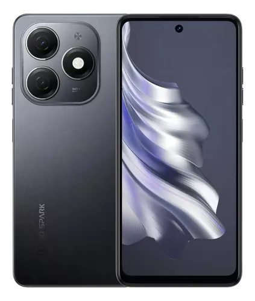
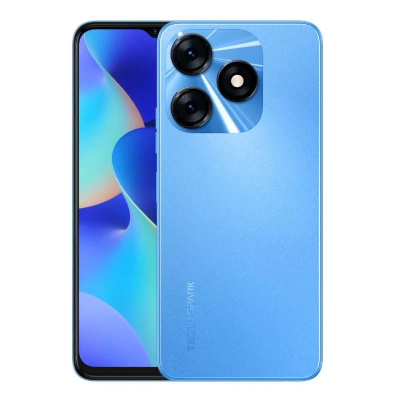

El Tecno Spark 20 tiene una pantalla de 6.6 pulgadas HD+, procesador MediaTek Helio G85, 8 GB de RAM y 256 GB de almacenamiento. Sus cámaras son de 50 MP y 32 MP, y la batería es de 5000 mAh con carga rápida de 18 W. Corre Android 13 con HiOS 12.

$530000
Tecno Spark 20C
El Tecno Spark 20C es una versión más económica con la misma pantalla de 6.6 pulgadas HD+. Su procesador y memoria son más modestos, pero mantiene una batería de 5000 mAh y cámaras similares. Corre una versión de Android con la capa de Tecno.

$600000
Tecno Spark 20 Pro
El Tecno Spark 20 Pro tiene una pantalla de 6.8 pulgadas Full HD+, procesador MediaTek Helio G95, 8 GB de RAM y 256 GB de almacenamiento. Sus cámaras son de 64 MP y 32 MP, y la batería es de 5000 mAh con carga rápida de 33 W. Corre Android 13 con HiOS 12.
$800000
Tecno Spark 20 Pro Plus
El Tecno Spark 20 Pro Plus mejora con una pantalla AMOLED de 6.8 pulgadas Full HD+, procesador MediaTek Dimensity 900, 12 GB de RAM y 512 GB de almacenamiento. Sus cámaras son de 108 MP y 32 MP, y la batería es de 5000 mAh con carga rápida de 45 W. También corre Android 13 con HiOS 12.